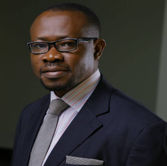

Prof. Bongo Adi
Academic Director
Prof Bongo Adi holds a full-time faculty position in the Economics and Business Intelligence department of Lagos Business School, Pan-Atlantic University, Nigeria. He is a development economist, data Scientist, PPP & Project Finance expert and management consultant working in the infrastructure, economic development and Policy field for the last 20 years – with expertise in managing teams, teaching & learning facilitation, PPPs, Project Finance, poverty research, econometric modelling, monitoring and evaluation of programs including the development of M&E plans, methodologies and indicators in multi-country large scale development projects; survey design and execution; randomised control trials; use of propensity score matching and other evaluation tools; technical report writing and promoting research uptake. His expertise has seen him lead and manage exciting and complex projects on multi-state randomised control experiments in health, evaluation of CCT in education, Infrastructure reforms and PPPs, project finance, market sounding for PPP studies, Willingness-To-Pay studies, Multi-sectoral Computable General Equilibrium modelling, macroeconomics modelling and forecasting, econometrics modelling and analysis, economic development strategies, including SME development and Finance. He has sound expertise in managing large grants within development aid contexts.
Prof. Bongo Adi has consulted for the World Bank on project design, preparation and appraisal. His current research interests include electricity market design, private-public partnerships, and the political economy of mega projects. He is a regular Economist and Business analyst on Channels TV, CNBC Africa and CNN. He maintains a column tagged bongonomics in the Businessday newspaper.
Michelle Chikezie, LLB, LLM
Legal Fundamentals (Partner, G. Elias)
Michelle Chikezie is a Partner at G. Elias, one of Nigeria’s leading business law firms, where she advises on complex transactions spanning capital markets, structured finance, project finance, venture capital, and private equity. She regularly represents multinational banks, pan-African financial institutions, telecommunications companies, and other leading corporates on cross-border transactions, Eurobond issuances, corporate restructurings, and other significant matters. She has been recognised as a “Next Generation Partner” by The Legal 500 and a “Rising Star Partner” by IFLR1000. Michelle is dual-qualified to practise law in Nigeria and New York State.
She has contributed to major industry forums like the African Private Capital Association (AVCA) Conference and the Africa Prosperity Summit, where she has shared insights on local fund domiciliation, regulatory frameworks, private capital, and market liquidity. Michelle graduated with First Class Honours from the Nigerian Law School, ranking among the top 0.2% nationally. She holds an LL.B. from the University of Lagos, an LL.M. from New York University School of Law, and a Master of International Public Policy in International Economics and Finance from Johns Hopkins SAIS.
Promise Godbold
Finance Fundamentals and Project Finance Modelling
Promise is a highly accomplished project finance expert with over 8 years of experience delivering comprehensive project finance modelling solutions and advisory and training services to clients and businesses across Africa and beyond. He has a proven track record in providing project finance transactions worth 100 million dollars, making him a valuable asset to his clients and students alike.
As an Associate Chartered Accountant, Financial Modelling and Valuation Analyst, Promise brings a wealth of expertise and knowledge to the table. He has delivered a series of project finance and financial modelling solutions across various industries, showcasing his versatility and adaptability.
Promise is deeply committed to sustainability, infrastructure, and development finance. He is focused on providing innovative solutions that align with these values and make a positive impact on communities and the environment. His most recent high-net-worth project finance modelling and advisory were delivered for Utilita Energy and Tourba Energy ( a Sierra Leonean Energy Company).